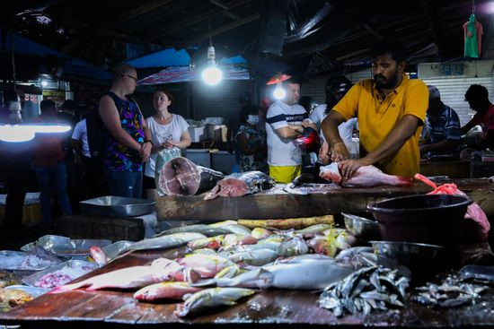

Key Attractions

Hikkaduwa Coral Reef offers snorkeling and diving with colorful fish, coral formations, and crystal-clear waters.

Hikkaduwa Beach is vibrant with golden sand, waves for surfing, and bustling beachside cafés and bars.

The Tsunami Memorial commemorates lives lost in the 2004 tsunami and offers a serene reflection point by the ocean.

The Turtle Hatchery protects endangered sea turtles, allowing visitors to learn and interact responsibly with marine conservation.

Hikkaduwa Seafood Market is perfect for fresh catches, experiencing local flavors, and understanding the fishing culture.